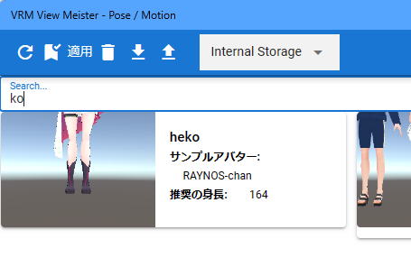

11.2. Open pose/motion
From ver 2.6.0, we have integrated the menu that opens poses and motions. VRMAnimation can be opened from within the same menu.
When using with a browser
In environments other than PWA, that is, in a browser, the pose list window will be displayed in a new tab. The same goes for browsers on mobile devices and VR devices.
In particular, when a new page is opened on a mobile device browser, the current screen is replaced with the new page. The same applies to this app.
Even if you open the pose list window in a new tab, the main screen of the app will remain in a separate tab. Feel free to switch between tabs and use them accordingly.
11.2.1. Basic usage
Basically, you can use the functions from the ribbon bar.
11.2.1.1. Open pose
The saved pose can be instantly reflected in any VRoid/VRM.
Click “Open” on the “3D Model” tab and then “Pose for App”.

A pose list window will be displayed (the “Pose” tab on the far right is already selected).
Select the desired pose and click “Apply”.

Note
The model character at the time of saving is written as a sample avatar. In addition, the height is also indicated as reference information.
Confirm that the pose has been reflected.

The same pose can be applied to other characters with different heights and builds. (However, if there is an extreme difference from the original character, it may deviate.)
When saving a pose, the position data of the VRoid/VRM itself is also saved. To restore that position data, please check “Also apply global coordinates when opening a pose” in the “Model” tab of “App Settings”.

Warning
Even if it is a different VRM, it will be restored to the exact same location. If you are loading multiple VRMs, the positions will overlap, so please turn off the option as necessary.
In the case of poses that are extremely unbalanced, it may not be reflected in a single application (especially LowerLeg). In that case, apply it again and the pose will be perfectly reproduced.
11.2.1.2. open motion
From ver 2.3.0, the function to open motion has been integrated into this window. Added support for internal storage, Google Drive, and application sample storage.
Motion can be applied not only to VRM but also to other objects.
Select the timeline to which you want to apply the motion.
Note
Please select the timeline, not the object list. By doing so, you can apply motion correctly to SystemEffect and each audio.
Click “Motion for App” from “Open” on the “3D Model” tab.
A pose list window will be displayed (the “Motion” tab on the far right is already selected).

Select the desired motion and click “Apply”.
Warning
If the object type is different from the selected timeline object (cast) type, motion cannot be applied.
11.2.1.3. Open VRMAnimation
The function to open VRMAnimation has been moved to the ribbon bar.
Click “VRMAnimation” from “Open” on the “3D Model” tab.
Click
Terminal,Internal Storage, orGoogle Drive.Specify and load the target .vrma file from each location.
Note
Loaded VRMAnimation can be saved throughout the app.
Once opened, VRMAnimation is automatically saved in the built-in storage as app history.
VRMAnimation saved in the internal storage can be saved to the device by clicking the download button.
11.2.1.4. Alternative ways to import poses and motions
Another way to load poses and motions is to drag and drop the following files saved on your PC onto the WebGL screen.
.vvmpose(VRM only).vvmmot.vrma(VRM only)
In the case of a pose file, you can immediately reproduce the pose at any time by simply dragging it from Explorer, etc.
For app motion
Select the timeline (roll) to which you want to apply the motion.
Drag and drop the
.vvmmotfile from Explorer etc. onto the WebGL screen.
Note
The timeline (role) types must be the same.
Please note that if motion data already exists, it will be overwritten (delete all before registering new data).
If the number of frames is greater than the maximum number of frames in the current project, it will be cut to that maximum number of frames. We recommend expanding the number of frames to some extent in advance.
When dragging and dropping, only the
.vvmmotextension is valid. (Cannot be opened with.json)When dragging and dropping, the currently selected cast must be assigned to some timeline (role). (If you do this from the project settings screen, it will be applied directly to the role, so there is no problem even if no cast is assigned.)
Hint
The duration of each frame of motion is independent for each timeline (and even for each frame), so importing it into an existing project will not affect other timelines.
For VRMAnimation
Select the VRM timeline (role) to which you want to apply the motion.
Drag and drop the
.vrmafile from Explorer etc. onto the WebGL screen.
11.2.2. Pose/motion list window
11.2.2.1. Change the pose loading location
Supported from ver 2.3.0. You can freely switch between the locations where poses are saved.
Name |
Description |
|---|---|
Internal Storage |
Load from internal storage. This is the default state. |
Google Drive |
Load from Google Drive. Separate Google Drive settings are required. |
Application |
Load the sample of this application. |
Displays the pose/motion list window.
Click the combo box in the center of the toolbar to make your selection.
For Google Drive and Application, saved poses will be displayed after loading occurs for a while. Internal Storage is displayed immediately.
11.2.2.2. Search poses/motions
Incremental search is possible in the same way as other lists in this application.
11.2.2.3. Load pose/motion files from disk
You can load poses and motion files saved on your PC’s disk into the app. Please press the upload button for the pose list.
Available only when the load location is Internal Storage.

Kind |
Extension |
|---|---|
Pose |
.vvmpose or .json |
Motion |
.vvmmot or .json |
The unique extensions of this app, .vvmpose and .vvmmot, are only for ease of identification, but if they are left as .json, they may be confused with other files, so please do not confuse them. Please be careful.
Once loaded, it will be displayed in the list. (For poses, there is no problem even if there is no thumbnail)
Warning
11.2.3. Other functions
11.2.3.1. Manage VRMAnimation
Opened VRMAnimation can be managed on the project settings screen.
For more information, see VRMAnimation in the project settings.